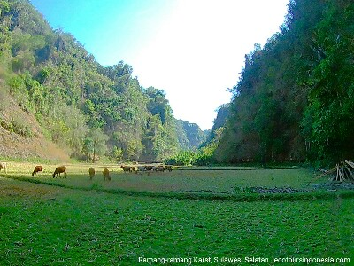
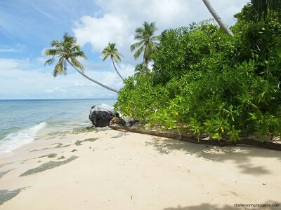

Wisata Indonesia
Ribuan pulau yang mengisi perairan di antara benua Asia dan Australia ini menawarkan banyak sekali atraksi wisata untuk siapa saja yang tertarik dengan keindahan alam, keanekaragaman budaya serta berbagai produk barang dan jasa yang dihasilkan oleh masyarakat di Indonesia. Kebanyakan wisatawan manca-negara hanya mengenal Bali. Memang Bali adalah pulau yang indah, daratan, gunung, tanah-tanah pertanian serta hutan merupakan kekayaan alam yang sangat tinggi nilainya. Kerajinan para petani, seniman hingga beragam ketrampilan masyarakatnya dalam mengelola sumber daya alamnya menjadikan Bali sebagai destinasi wisata terpopuler di Indonesia.
 Bunga Rhododendron di kawasan perbukitan sekitar Danau Anggi Giji dan Anggi Gida di Pegunungan Arfak
Bunga Rhododendron di kawasan perbukitan sekitar Danau Anggi Giji dan Anggi Gida di Pegunungan Arfak
Namun demikian Indonesia memiliki lebih banyak tempat wisata yang layak dikunjungi oleh wisatawan. Dataran Tinggi Gayo di Aceh misalnya adalah kawasan wisata pertanian yang subur, pemandangan pegunungan yang indah memberikan kesejukan baik di mata maupun di hati para pelancong yang berkunjung ke sana. Gayo juga terkenal dengan biji kopi pilihan yang harum jika diseduh dengan air panas. Perbukitan Karst di Ramang-Ramang, Maros, Sulawesi Selatan
Di Sulawesi Selatan ada juga lokasi wisata alam yang indah sekali pemandangannya. Namanya adalah Ramang-Ramang. Tempat wisata ini memiliki gugusan karst yang mirip dengan di Raja Ampat. Hanya saja bukit-bukit karst itu berdiri tegak di darat dan bukannya di laut. Di sela-sela perbukitan karst, kita bisa melihat areal persawahan, hewan ternak dan rumah-rumah panggung milik penduduk yang dibuat dari kayu.
Pantai Pasir Putih di Raja AmpatDi ujung timur Indonesia adalah Papua. Ada 2 provinsi di daerah ini yakni Papua dan Papua Barat. Keduanya miliki daya tarik tersendiri bagi wisatawan yang suka dengan alam dan budaya yang unik. Hutan Papua adalah rumah bagi burung-burung surga, kuskus, maupun hewan melata yang eksotik. Kawasan pesisir pantai dihiasi oleh pasir putih, dan terumbu karang yang menjadi habitat alami bagi ribuan spesies ikan yang berwarna-warni.